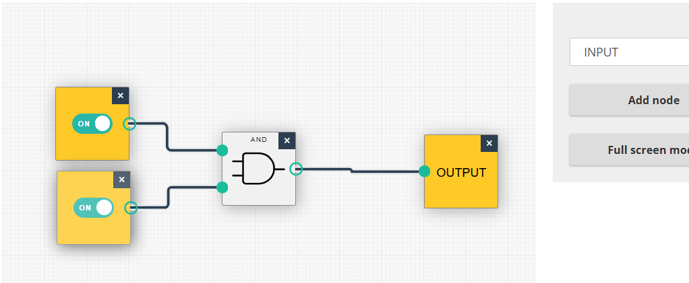

Architecture des ordinateurs et électronique
L'architecture d'un ordinateur
La plupart des ordinateurs suivent l'architecture de von Neumann : le processeur, la mémoire et les entrées/sorties communiquent entre eux par des bus.
Unité de commande + UAL + registres
RAM et ROM
Disque dur, SSD
Clavier, souris, micro
Écran, imprimante, haut-parleurs
Commentaire du schéma
- Processeur (CPU) : c'est le « cerveau ». L'unité de commande lit les instructions et les fait exécuter. L'UAL (unité arithmétique et logique) fait les calculs et les comparaisons. Les registres sont de toutes petites mémoires très rapides à l'intérieur du processeur.
- Mémoire centrale : la RAM garde les programmes et les données en cours d'utilisation, et elle s'efface quand on éteint l'ordinateur. La ROM garde les programmes de démarrage, même quand l'ordinateur est éteint.
- Stockage : le disque dur ou le SSD garde les fichiers, même ordinateur éteint.
- Entrées et sorties : elles permettent à l'ordinateur d'échanger avec l'utilisateur.
- Bus : ce sont les « routes » des informations. Le bus de données transporte les valeurs, le bus d'adresses indique où lire ou écrire dans la mémoire, et le bus de commande dit s'il faut lire ou écrire.
Les systèmes de numération
L'ordinateur ne comprend que le binaire (base 2 : seulement 0 et 1). L'hexadécimal (base 16 : de 0 à 9, puis A à F) sert à écrire le binaire de façon plus courte.
Décimal → binaire : divisions successives par 2
Exemple avec 13 :
| Division | Quotient | Reste |
|---|---|---|
| 13 ÷ 2 | 6 | 1 |
| 6 ÷ 2 | 3 | 0 |
| 3 ÷ 2 | 1 | 1 |
| 1 ÷ 2 | 0 | 1 |
On lit les restes de bas en haut : 13 = 1101 en binaire.
Binaire → décimal
Chaque position vaut une puissance de 2 (8, 4, 2, 1). Par exemple : 1011 = 1×8 + 0×4 + 1×2 + 1×1 = 11.
Hexadécimal
En hexadécimal, A = 10, B = 11… jusqu'à F = 15. Par exemple : 2A = 2×16 + 10 = 42. Pour passer du binaire à l'hexadécimal, on coupe en groupes de 4 bits : 42 = 0010 1010 = 2 A.
| Décimal | Binaire | Hexadécimal |
|---|---|---|
| 11 | 1011 | B |
| 13 | 1101 | D |
| 42 | 101010 | 2A |
| 255 | 11111111 | FF |
Électronique numérique : les portes logiques
Une porte logique reçoit des signaux 0 ou 1 et donne une sortie selon une règle. Les portes sont fabriquées avec des transistors, et un processeur en contient des milliards.
Porte ET (AND) : la sortie vaut 1 seulement si les deux entrées valent 1
| A | B | A ET B |
|---|---|---|
| 0 | 0 | 0 |
| 0 | 1 | 0 |
| 1 | 0 | 0 |
| 1 | 1 | 1 |
Porte OU (OR) : la sortie vaut 1 si au moins une entrée vaut 1
| A | B | A OU B |
|---|---|---|
| 0 | 0 | 0 |
| 0 | 1 | 1 |
| 1 | 0 | 1 |
| 1 | 1 | 1 |
Porte NON (NOT) : la sortie est l'inverse de l'entrée
| A | NON A |
|---|---|
| 0 | 1 |
| 1 | 0 |
Mon test dans un simulateur
J'ai testé la porte ET dans le simulateur en ligne Academo : avec A = 1 et B = 1, la sortie vaut 1. Si une entrée passe à 0, la sortie passe à 0.

Transparence IA
Outils utilisés : simulateur de portes logiques Academo, Claude.
Rôle de l'IA : Claude m'a proposé la structure de la page, le schéma, les explications et les exemples de conversion.
Ce que j'ai fait moi-même : j'ai refait les conversions à la main pour les vérifier, testé la porte ET dans le simulateur, fait la capture d'écran, et lu et compris le contenu.
Sources vérifiées : mon cours d'architecture des ordinateurs (ISET Nabeul), Academo – Logic Gate Simulator.